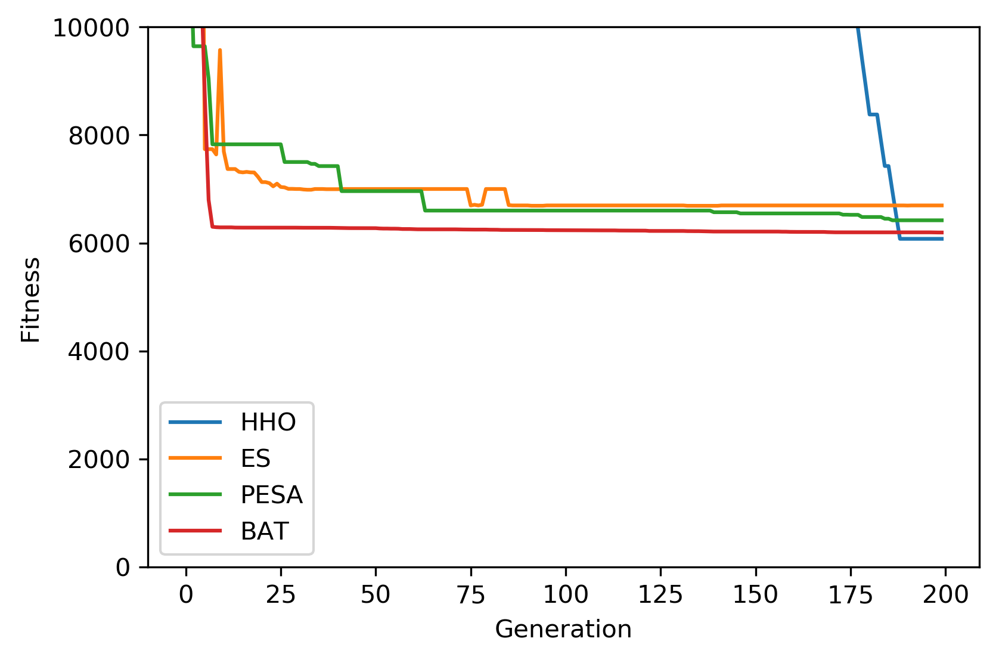

Example 8: Pressure Vessel Design with Demonstration of Categorical Parameter¶
Example of solving the constrained engineering optimization problem “Pressure vessel design” using NEORL with HHO, ES, PESA, and BAT algorithms to demonstrate compatibility with mix of continuous, discrete, and categorical spaces.
Summary¶
Algorithms: HHO, ES, PESA, BAT
Type: Mixed discrete-continuous-categorical, Single-objective, Constrained
Field: Mechanical Engineering
Problem Description¶
The pressure vessel design is an engineering optimization problem with the objective to evaluate the optimal thickness of shell (\(T_s\)), thickness of head (\(T_h\)), inner radius (R), and length of shell (L) such that the total cost of material, forming, and welding is minimized accounting for 4 constraints. \(T_s\) and \(T_h\) are integer multiples of 0.0625 in., which are the available thicknesses of rolled steel plates, and R and L are continuous. Unlike Example 7, \(T_h\) will be modeled as a categorical parameter to demonstrate compatibility with a mix of continuous, discrete, and categorical parameters. The figure below shows the dimensions of the pressure vessel structure.

The equation for the cost of the pressure vessel is
subject to 4 constraints
where \(0.0625 \leq x_1 \leq 6.1875\) (with step of 0.0625), \(x_2 \in \{0.0625, 0.125, 0.1875, 0.25, 0.3125, 0.375, 0.4375, 0.5, 0.5625, 0.625\}\), \(10 \leq x_3 \leq 200\), and \(10 \leq x_4 \leq 200\).
NEORL script¶
########################
# Import Packages
########################
from neorl import HHO, ES, PESA, BAT
import math
import matplotlib.pyplot as plt
#################################
# Define Vessel Function
#Mixed discrete/continuous/grid
#################################
def Vessel(individual):
"""
Pressure vesssel design
x1: thickness (d1) --> discrete value multiple of 0.0625 in
x2: thickness of the heads (d2) ---> categorical value from a pre-defined grid
x3: inner radius (r) ---> cont. value between [10, 200]
x4: length (L) ---> cont. value between [10, 200]
"""
x=individual.copy()
x[0] *= 0.0625 #convert d1 to "in"
y = 0.6224*x[0]*x[2]*x[3]+1.7781*x[1]*x[2]**2+3.1661*x[0]**2*x[3]+19.84*x[0]**2*x[2];
g1 = -x[0]+0.0193*x[2];
g2 = -x[1]+0.00954*x[2];
g3 = -math.pi*x[2]**2*x[3]-(4/3)*math.pi*x[2]**3 + 1296000;
g4 = x[3]-240;
g=[g1,g2,g3,g4]
phi=sum(max(item,0) for item in g)
eps=1e-5 #tolerance to escape the constraint region
penality=1e7 #large penality to add if constraints are violated
if phi > eps:
fitness=phi+penality
else:
fitness=y
return fitness
bounds = {}
bounds['x1'] = ['int', 1, 99]
bounds['x2'] = ['grid', (0.0625, 0.125, 0.1875, 0.25, 0.3125, 0.375, 0.4375, 0.5, 0.5625, 0.625)]
bounds['x3'] = ['float', 10, 200]
bounds['x4'] = ['float', 10, 200]
########################
# Setup and evolute HHO
########################
hho = HHO(mode='min', bounds=bounds, fit=Vessel, nhawks=50,
int_transform='minmax', ncores=1, seed=1)
x_hho, y_hho, hho_hist=hho.evolute(ngen=200, verbose=False)
assert Vessel(x_hho) == y_hho
########################
# Setup and evolute ES
########################
es = ES(mode='min', fit=Vessel, cxmode='cx2point', bounds=bounds,
lambda_=60, mu=30, cxpb=0.7, mutpb=0.2, seed=1)
x_es, y_es, es_hist=es.evolute(ngen=200, verbose=False)
assert Vessel(x_es) == y_es
########################
# Setup and evolute PESA
########################
pesa=PESA(mode='min', bounds=bounds, fit=Vessel, npop=60, mu=30, alpha_init=0.01,
alpha_end=1.0, cxpb=0.7, mutpb=0.2, alpha_backdoor=0.05)
x_pesa, y_pesa, pesa_hist=pesa.evolute(ngen=200, verbose=False)
assert Vessel(x_pesa) == y_pesa
########################
# Setup and evolute BAT
########################
bat=BAT(mode='min', bounds=bounds, fit=Vessel, nbats=50, fmin = 0 , fmax = 1,
A=0.5, r0=0.5, levy = True, seed = 1, ncores=1)
x_bat, y_bat, bat_hist=bat.evolute(ngen=200, verbose=1)
assert Vessel(x_bat) == y_bat
########################
# Plotting
########################
plt.figure()
plt.plot(hho_hist['global_fitness'], label='HHO')
plt.plot(es_hist, label='ES')
plt.plot(pesa_hist, label='PESA')
plt.plot(bat_hist['global_fitness'], label='BAT')
plt.xlabel('Generation')
plt.ylabel('Fitness')
plt.ylim([0,10000]) #zoom in
plt.legend()
plt.savefig('ex8_pv_fitness.png',format='png', dpi=300, bbox_inches="tight")
########################
# Comparison
########################
print('---Best HHO Results---')
print(x_hho)
print(y_hho)
print('---Best ES Results---')
print(x_es)
print(y_es)
print('---Best PESA Results---')
print(x_pesa)
print(y_pesa)
print('---Best BAT Results---')
print(x_bat)
print(y_bat)
Results¶
A summary of the results is shown below with the best \((x_1, x_2, x_3, x_4)\) and \(y=f(x)\) (minimum vessel cost). The figure is zoomed to a relevant y-scale that shows all methods clearly. HHO is best algorithm for this case.
{kind=link}
------------------------ HHO Summary --------------------------
Function: Vessel
Best fitness (y) found: 6076.871989481831
Best individual (x) found: [13.0, 0.4375, 41.958165787313035, 178.38267571773872]
--------------------------------------------------------------
------------------------ ES Summary --------------------------
Best fitness (y) found: 6689.115350860009
Best individual (x) found: [17, 0.5, 52.39036909796362, 80.46789374601103]
--------------------------------------------------------------
------------------------ PESA Summary --------------------------
Best fitness (y) found: 6420.244320020875
Best individual (x) found: [15, 0.5, 48.11672433151982, 114.1606860286298]
--------------------------------------------------------------
------------------------ BAT Summary --------------------------
Best fitness (y) found: 6194.304291280144
Best individual (x) found: [13.0, 0.4375, 41.040436491185176, 190.26719495938994]
--------------------------------------------------------------